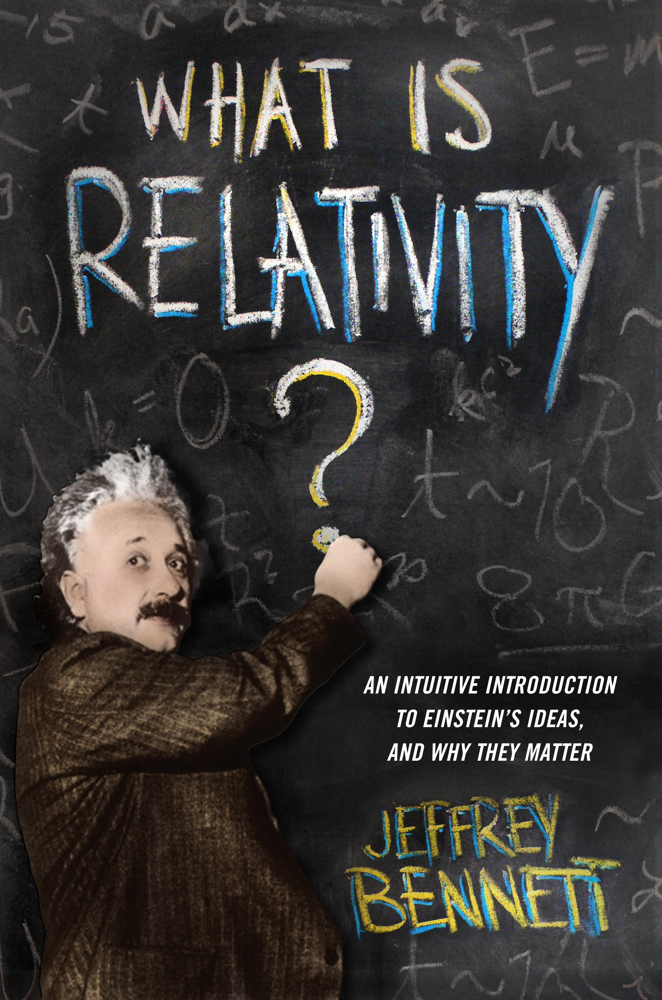

Jeffrey Bennett unknown

Citate from Jeffrey Bennett page
Jeffrey Bennett holds a B.A. in Biophysics from the University of California at San Diego and an M.S. and Ph.D. in Astrophysics from the University of Colorado at Boulder. He specializes in mathematics and science education, writing for and speaking to audiences ranging from elementary school children to college faculty. His extensive teaching experience, which spans all levels from preschool through graduate school, includes having founded and run a private science summer school for elementary and middle school children and teaching more than fifty college classes in astronomy, physics, mathematics, and education. He has received numerous awards for his teaching and writing, including the American Institute of Physics Science Communication Award.Publicated books:
